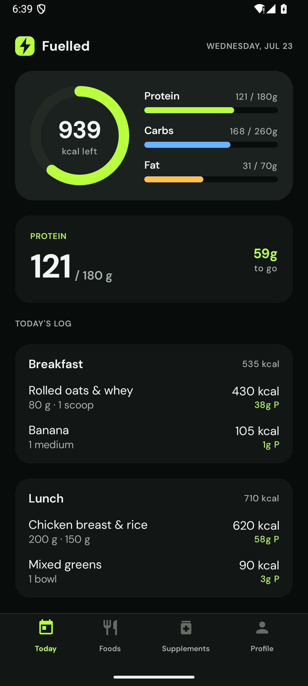
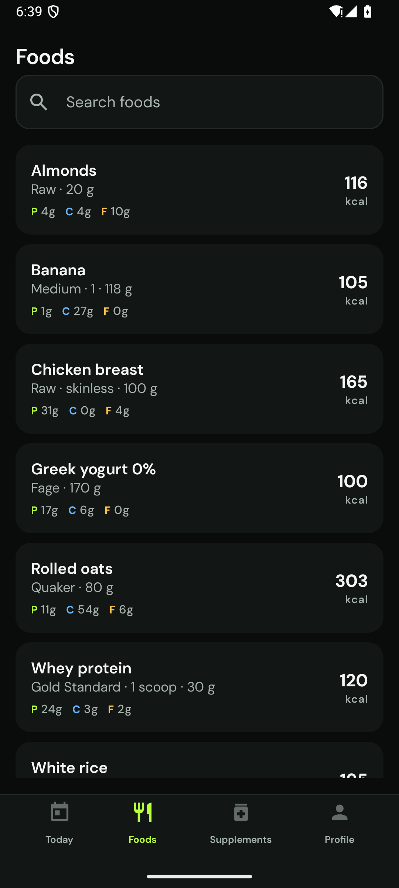

Live on the headless Android emulator (Medium_Phone_API_35) · debug build · real Room data · driven via the cmp-inspector live tier, pixels captured per screen · 2026-07-24
verify lane PASS (11/11)a11y live audit 0 violationsgoverned artifacts 9/9 approvedspecs 26 clauses, all test-citedDB Room v5, seeded

TODAY — dashboard
Daily macro dashboard
Calorie ring: 939 kcal left of 2,400 (live Room aggregate)
Macro bars P 121/180 · C 168/260 · F 31/70
Protein focus card: 59 g to go
Log grouped by meal — Breakfast 535 · Lunch 710 · Snack 216; day total = Σ entries
Spec TODAY-01/02/03 seen live; empty/error arms proven in tests

FOODS — exemplar
Searchable catalog (Room)
Catalog served from Room, seeded on first run (7 foods)
Rows: name · brand · serving · P/C/F tags · kcal
Nav Today→Foods proven structurally (navigate_and_inspect)
Surfaced during this run-through (logged to harness findings)
render_screen(live) serves a stale frame [P1] — the MCP's live screenshot returned byte-identical PNGs for two different screens; caught by hash-compare, cross-checked with adb screencap (which is what this report's images use). Structural tools were unaffected. Logged with a regression-proof recipe.
The live device view /inspect/remote needs headline documentation [P1] — click-to-drive browser mirror of the real device; “critical, it's amazing” → promoted to README/console/launch-content material.
Not a bug: a search for “oats” initially showed the empty state — leftover “Chicken” in the retained ViewModel query (process survived the e2e run) made the query “Chickenoats”. Correct behavior; a fresh launch filtered perfectly. Real DAO SQL (LIKE '%…%') matches the fake's contains semantics — checked.